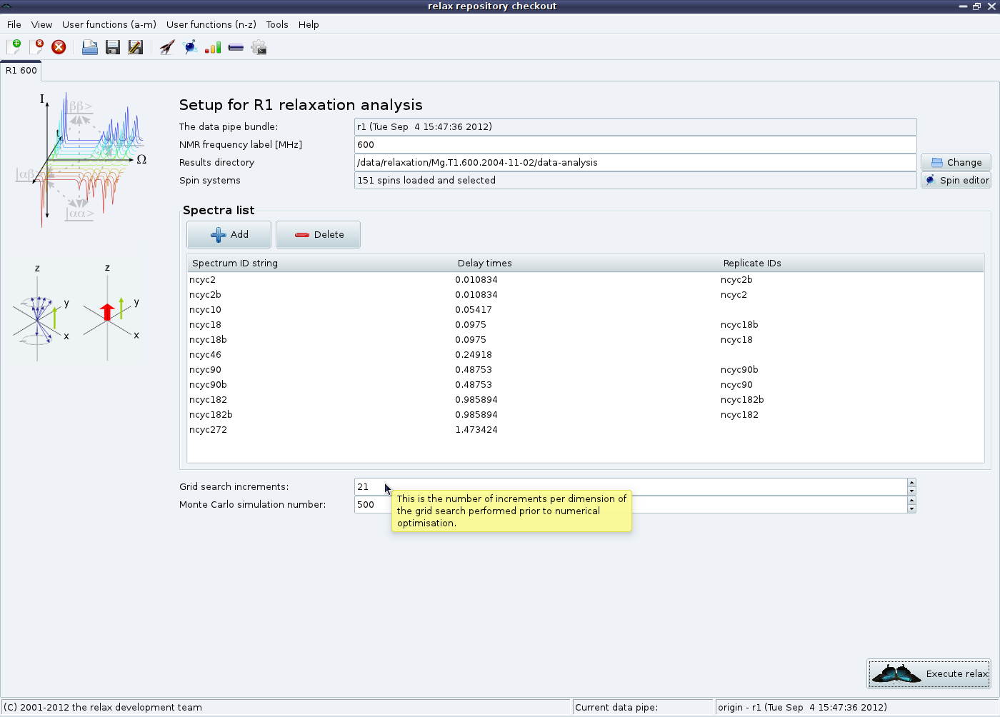

Next: Relax-fit GUI mode - Up: The relaxation curve-fitting auto-analysis Previous: Relax-fit GUI mode - Contents Index
At this stage, the peak intensity data needs to be loaded. In both the R1 and R2 analysis tabs is a “Spectra list” GUI element. Click on the “Add” button to launch the peak intensity loading wizard:

|
In this example, a Sparky peak list containing the peak heights determined from the averaged chemical shift positions for all spectra will be loaded. Set the spectrum ID string to a unique value. Click on “Next”. This will most likely cause a RelaxWarning message to appear for all peak list elements which do not correspond to any spins loaded into the relax data store:

|
These messages must be carefully checked to be sure that the correct data has been loaded. A RelaxError might be thrown if the peak list is corrupted or if the dimension has been incorrectly given. In this case check the message, go “Back”, fix the problem, and click on “Next” again. Then click on “Next”. You should now see the error type page:

|
The description for this wizard page should be very carefully read - it will tell you about all of the error analysis options available and how these are implemented in relax. For the protein relaxation example, replicated spectra have been collected. Therefore the option “Replicated spectra” will be chosen. The “Baseplane RMSD” option is documented in the NOE chapter. After clicking on “Next” you will see:

|
For the first of the duplicate spectra, or any spectrum without a duplicate, you can click on the “Skip” button. If this is the second spectrum you have loaded from a duplicated set, select the two replicated spectra and then click on “Next”:

|
Finally set the relaxation time period for this experiment in seconds:

|
All delays and pulse lengths in the pulse sequence should be carefully checked to be sure that the time is exactly what you would expect - the estimated time may not match the real time. To set the time and close the wizard, click on the “Finish” button.
This procedure should be repeated for every experiment you have collected (you could, as an alternative, load all at the same time using the “Apply” button at each stage). In the end you should see something such as:
|

|